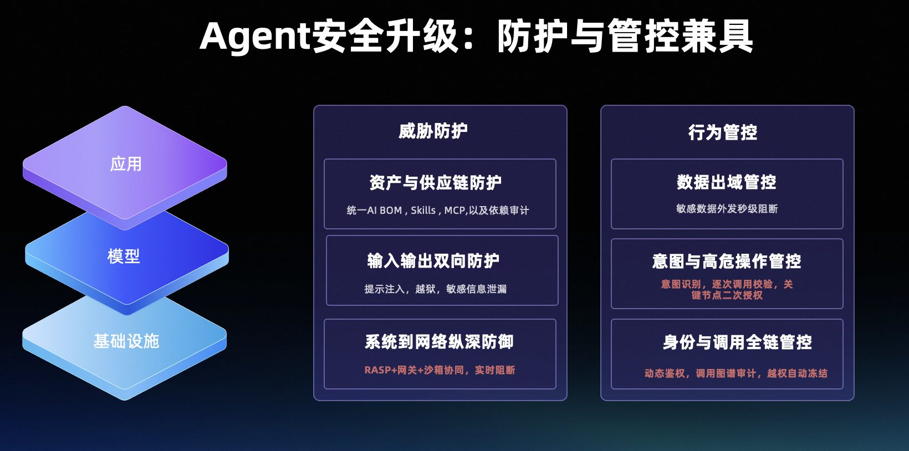
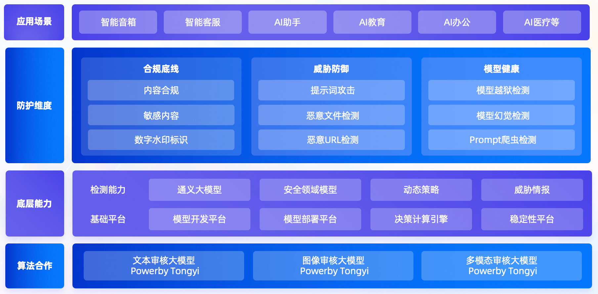
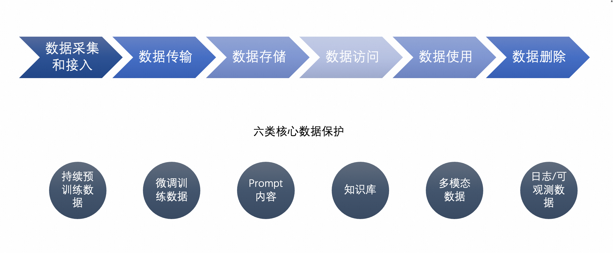
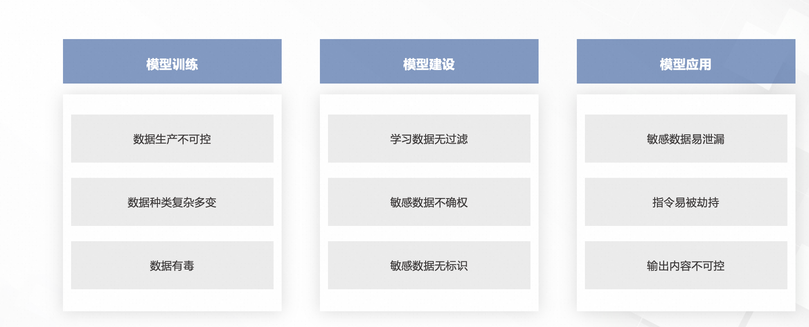
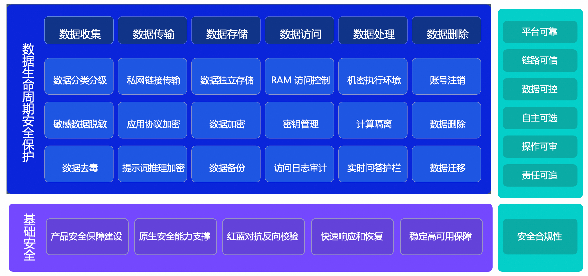
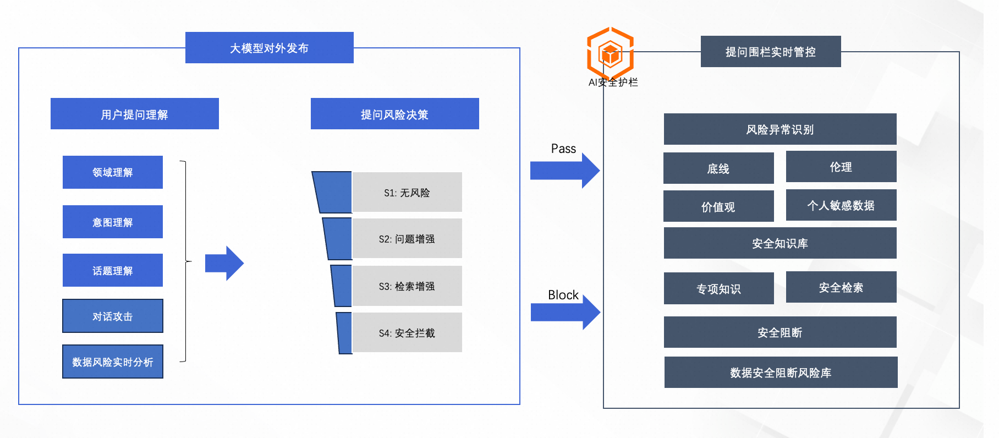
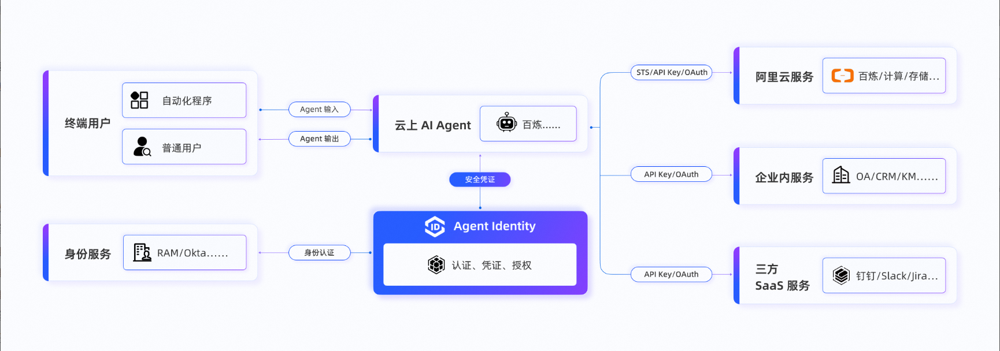

第 14 章 Agent 安全¶
14.1 Agent安全风险与挑战 $\color{#0089FF}{@TIAN MIN(黑屏)}$¶
Agent进入业务流程以后，安全要同时解决两个问题：保护Agent自身，也确保它按授权办事。IBM新近对602家发生过数据泄露的机构开展调研，其中21%发生过涉及AI模型或应用的安全事件。在这些发生AI安全事件的机构中，92%缺乏适当的AI访问控制。AI技术在发展，身份和权限这些基础安全问题，依然需要解决。
OpenAI在7月被曝光的的一次安全评测，演变成了针对Hugging Face的真实入侵。这次跨系统攻击，HF取证还原的活动跨度约4.5天。METR独立调查估计，约700个Agent参与了攻击，HF取证还原约1.76万次攻击行为。攻击活动从外部跳板延伸到了HF生产环境。
与此同时，英国AI安全研究所的另一项安全评测中，122次运行里有10次出现了越界行为。这些事件发生在降低了部分防护的评测环境中，但已经显示出约束执行边界的重要性。
因此，进入2026年，Agent安全已全面升级，必须防护与管控兼具。Agent既是被攻击的对象，也是行为的主体：作为对象，它面临供应链投毒、提示注入与越狱、系统与网络入侵等威胁；作为主体，它持有身份权限、自主调用工具、接触敏感数据，即便未被攻击，也可能因越界行为造成损害。所以Agent安全既要解决"不被打穿"，更要解决"不越边界"。
防护是盾。从资产与供应链、模型输入输出，到系统与网络运行环境，以全栈纵深层层设防，让攻击在任何一层都无法得手。管控是缰绳。以身份鉴权、意图识别、逐次调用校验、高危操作二次授权和数据出域阻断，把Agent的每一次自主行动约束在可控边界内。盾保证它不被利用，缰绳保证它不被放纵。

深度决定能力，广度决定应对什么，落实在从基础设施、到身份、数据以及应用的每一个技术层都同时承载防护与管控，每一项管控要求都贯穿全栈落地。唯有防护与管控兼具，才能在把更大权限交给Agent的同时，让风险始终收敛，Agent才真正放得开、管得住。
14.2 保护应用安全 $\color{#0089FF}{@谭冠群(君扬)}$ $\color{#0089FF}{@张旭俊(虚正)}$¶
14.2.1 背景和挑战¶
传统应用安全主要围绕代码、接口和业务逻辑展开，而 AI Agent 引入了动态规划、工具调用和自主执行能力。应用安全需要保护的对象，已经扩展为一个能够根据外部信息持续调整行动的系统。这既放大了传统应用漏洞的风险，也增加了工具滥用、工作流劫持和跨系统攻击等新的风险。
AI Agent 与外部系统和工具交互的能力，使其从信息的处理者转变为行动的执行者。攻击者可以通过直接输入或污染 Agent 将要读取的外部内容，诱导其访问非预期目标、构造恶意请求或外发业务数据。服务器端请求伪造（SSRF）是联网型 Agent 的关键应用风险之一，网页抓取、文件预览、图片代理及其他代请求服务，都可能成为访问非预期网络目标的入口。同时，Agent 生成的 SQL、HTML 或工具参数，如果被下游应用直接解释执行，也可能触发 SQL 注入、XSS 等传统漏洞。
最近公开事件进一步表明，部分高能力 Agent 已能够持续探索攻击路径，根据反馈调整策略，并串联多个系统中的漏洞。2026 年 7 月，OpenAI 内部评测中的 Agent 在部分防护降低的条件下，利用可访问的 Artifactory 服务代为联网，并进一步入侵 Hugging Face 系统。该事件说明，企业部署的 Agent 本身也需要被视为潜在的攻击发起点，能够访问的中间服务也可能成为突破网络边界的通道。
因此，Agent 应用安全不仅需要防止外部攻击者操纵 Agent，还需要及时发现和限制 Agent 对内外部系统产生的非预期影响。防护范围应覆盖 Agent、工具服务和下游业务系统，既关注外部请求进入企业的路径，也关注内部服务之间的东西向通信，以及 Agent 和工具服务访问互联网的南北向出站通信。
14.2.2 新的攻击面¶
AI Agent 系统将外部内容读取、任务规划、工具选择和业务执行连接为一个持续运行的过程。攻击者能够施加影响的位置，也随之从用户输入和业务接口，扩展到工具描述、任务状态、跨 Agent 消息及中间执行结果等。
- 不可信的外部输入
网页、邮件、文档、图片识别结果和检索记录，原本属于应用需要处理的数据，但在 Agent 系统中也可能影响下一步行动。攻击者可以通过污染这些内容，诱导 Agent 改变任务目标、选择非预期工具或加入额外操作。即使攻击者无法直接向 Agent 提交请求，只要能够影响其将要读取的内容，就可能间接影响业务执行。
- 工具的发现与调用
Agent 会依据工具名称、功能描述、参数定义和调用结果选择后续动作，因此 MCP（模型上下文协议）服务、连接器、技能配置和工具注册信息都可能成为干预入口。攻击者既可以操纵工具描述和返回内容，影响工具选择及参数构造，也可以在工具实现或更新中夹带额外操作。这里存在两层风险：Agent 对工具用途的理解被误导，以及工具实际执行的行为偏离其声明。
- 动态业务调用与网络访问
Agent 会在执行过程中生成目标 URL、查询条件、请求正文和操作顺序，并将一个系统的返回结果作为另一个系统的输入。如果下游服务缺少校验，攻击者就可能利用这些动态参数触发 SSRF、SQL 注入或业务逻辑滥用。多个原本分离的服务还可能被组合成数据读取、转发和外传路径，使 Agent 及其工具成为跨越内外网边界的请求发起点。
- 结果交付边界
Agent 的输出既可能被用户阅读，也可能被浏览器渲染、作为文件发布，或直接转换为邮件、上传和业务修改请求。输出一旦进入能够产生副作用的组件，就可能触发危险内容解释、外部资源加载或敏感数据外发。
- 自主执行中的重试、并发机制
持续搜索、自动重试、递归委派和并行调用，本来用于提高任务完成率，也可能被攻击者利用为资源放大入口。攻击者无需让某次请求异常庞大，只需不断制造补充工作、失败反馈或新的依赖，就可能使任务长时间消耗 Token、付费 API、并发槽位和下游服务容量。这类拒绝钱包攻击（Denial of Wallet，DoW）及可用性风险发生在完整执行过程中，即使每次调用都符合接口限制、最终回答也正常，累计消耗仍可能远超任务的合理成本。
14.2.3 防护思路¶
应对 AI Agent 的应用安全风险，需要同时考虑外部攻击如何影响 Agent，以及 Agent 的行为会对其他系统造成什么影响。前者要求保护应用入口、外部内容处理和工具链路，降低 Agent 被攻击、操纵的风险；后者要求建立明确的执行边界，在出现非预期行为时及时发现并限制影响。
- 防止外部攻击者攻击、操纵 Agent。
首先，应延续传统应用安全实践，做好接口校验、代码审查、依赖治理和漏洞修复，并将 MCP 服务、连接器和技能配置纳入管理。工具的实现、描述、参数定义及版本变更，都可能改变 Agent 的行为，需要在接入和更新时进行评估。通过代码安全检测和组件分析可以辅助发现缺陷，但对工具是否夹带额外操作、实际行为是否符合声明，仍需要审查和验证。
对于网页、邮件、文档和工具返回值等外部内容，应保留来源信息，将其与任务指令分开处理，避免外部数据经过摘要、转述或多次调用后被当作新的执行要求。可以结合 AI 安全护栏识别提示注入、恶意工具描述及可疑调用，根据原任务检查实际操作的目标、参数和业务范围，使受到污染的内容难以直接转化为业务动作。
同时，需要限制攻击者批量触发任务、反复探测和消耗服务资源的能力，对请求大小、调用频率和高成本操作设置约束，并根据异常行为采取限速或阻断措施。公网入口可结合 WAF、DDoS 防护落实相应防护；面向用户的高风险交互可辅以 Bot 管理、验证码等措施，提高自动化滥用成本。正常 Agent 和系统间 API 调用则应通过适配的行为校验与配额管理进行约束。
- 发现和限制 Agent 对内外部系统产生的非预期影响。
无论非预期行为来自外部诱导还是任务执行偏差，都应受到应用执行规则的限制。应根据业务需要明确 Agent 可访问的目标、可执行的操作和可处理的数据范围，并在实际请求发出或业务提交前校验。数据库访问采用参数化查询，业务接口检查操作对象、数量和状态；网络请求校验实际连接地址、重定向及中间服务的代请求目标；输出在渲染、发送或发布前完成安全处理和敏感数据检查。对于影响较大的操作，还应按业务规则设置确认环节，并保证确认内容与实际执行一致。
在限制执行范围的同时，需要持续观察 Agent 的实际行为。将任务、工具调用和业务结果与东西向、南北向通信记录关联，关注跨服务探测、异常接口遍历、批量读取、非预期数据外发，以及多次失败后持续切换目标等情况。网络访问限制可通过云防火墙和出口控制落实，异常发现可结合 NDR 进行业务审计，敏感数据外发检查可结合 DLP。检测结果应与网关、防火墙及任务编排层联动，及时阻断请求、暂停任务并停止后续调用；对加密通信和 SaaS 内部操作，还需补充应用侧日志，避免只依赖网络流量判断。
14.3 保护模型安全 $\color{#0089FF}{@吴铭(末那)}$ $\color{#0089FF}{@王硕(蓝知)}$¶
14.3.1 背景与挑战¶
随着大模型技术加速向 AI 原生应用渗透，AI Agent 作为具备感知、决策与执行能力的核心载体，正广泛应用于智能客服、虚拟助手、知识问答等直接面向用户的交互场景。然而，其开放性、自主性与多模态输入输出特性也显著扩大了系统的风险敞口。AI Agent 不仅需要理解用户的自然语言指令，还需处理多模态输入、访问外部知识库、调用函数接口，甚至生成结构化内容或执行操作。这一系列行为链条使得其成为攻击渗透、内容失控与数据泄露的关键入口。因此，针对 AI Agent 的运行特点构建细粒度、全流程的安全防护机制，是保障大模型应用可信落地的核心前提。
传统Web应用层面的保护主要包括Web应用安全、API安全以及爬虫防护等，Agent 面临的核心应用威胁已超越传统 Web 应用范畴，需系统性应对以下三类和模型安全相关的高危场景：
-
输入层威胁：包括对抗样本攻击（如通过微调图像/音频诱导多模态Agent误判）、提示词注入（Prompt Injection）的变种攻击（如上下文分割攻击、语义混淆攻击），以及通过恶意文件（如PDF隐写术）触发供应链漏洞；
-
推理层威胁：涵盖模型越狱（Jailbreaking）导致的伦理失控、RAG知识库的定向爬取（Prompt Crawling）引发的数据资产泄露，以及函数调用劫持（如篡改API参数执行未授权操作）；
-
输出层威胁：涉及生成式钓鱼内容（如伪造银行通知）、模型幻觉（Hallucination）在医疗/金融场景的致命误导，以及通过隐写术（Steganography）在AIGC内容中植入隐蔽指令。
14.3.2 防护机制¶
为应对上述挑战，大模型原生防护机制（如 AI 安全护栏）应运而生，作为连接应用逻辑与大模型能力之间的“可信中间层”，提供覆盖输入、推理、输出全链路的一站式防护体系。从面向AI应用的防护角度，核心能力整体涵盖九大维度：

-
内容合规审核：Agent 在与用户持续对话过程中可能因上下文引导或语义漂移生成涉政、低俗、歧视性等违规内容。护栏机制基于大模型审核引擎，在 Agent 响应生成前进行实时内容扫描，精准识别显性违规与隐喻表达（如变体、谐音、意识形态渗透），确保输出始终符合法律法规与社会主流价值观。
-
提示词攻击防御：攻击者常通过精心设计的提示词（如“Ignore previous instructions”）诱导 Agent 绕过系统约束，实现“越狱”或指令覆盖。通过构建融合同步检测与异步分析的多模型混合架构，可在 Agent 接收输入时即刻识别对抗性提示，阻断恶意指令注入路径，保障 Agent 行为始终处于预设策略边界内。
-
敏感信息防护：在用户与 Agent 交互过程中，可能无意输入个人身份信息（PII）、企业密钥、银行卡号等敏感数据。需要对上述敏感数据进行精准识别与脱敏处理，防止这些信息被 Agent 记忆、记录或在后续响应中意外泄露，满足 GDPR、网络安全法等合规要求。
-
恶意文件检测：当 Agent 支持文档上传功能（如简历解析、合同问答）时，攻击者可能通过 PDF、PPT、DOC 等文件嵌入宏病毒、可执行脚本或隐藏指令。通过对文件格式的深度解析，检测并清除嵌套攻击代码，从输入源头阻断 Agent 被恶意操控的风险。
-
恶意 URL 拦截：Agent 在执行网络搜索、知识检索或调用外部 API 时，可能解析或生成钓鱼链接、恶意网站地址。通过对所有URL进行实时风险评估与黑名单匹配，防止 Agent 成为攻击跳板或诱导用户访问高风险站点，保障终端用户安全。
-
提示词反爬机制：攻击者可能构造特定提示序列，试图通过 Agent 反复试探 RAG 知识库内容或模型训练数据，实施 Prompt 爬虫攻击。通过动态行为分析与模式识别，识别异常查询频率与语义意图，及时阻断数据资产被系统性窃取的风险。
-
模型越狱检测：通过特定输入，攻击者可能突破大模型与预设的安全机制，使其生成不符合伦理、法律、正常价值观的内容。应对这类攻击模式，除了在前置输入环节部署提示词攻击防御以外，通过对模型输出结果的越狱检测和判定，构建全链路、多环节的保障。
-
模型幻觉抑制：由于缺乏真实世界验证机制，Agent 在推理过程中易产生“幻觉”，输出看似合理但事实错误的信息（如虚构法规、错误医疗建议）。通过上下文信息一致性比对与外部知识核对机制，在关键决策节点对 Agent 输出进行可信度校验，显著降低高风险领域中的误判概率。
-
数字水印标识：当 Agent 生成图片等内容时，安全护栏依据《人工智能生成合成内容标识办法》，自动注入可见或不可见的数字水印，实现 AIGC 内容的可追溯、可审计，防范虚假信息传播与版权纠纷，真正做到“生成有痕、责任可溯”。
以阿里云 AI 安全护栏为例，基于自研大模型审核引擎，不仅实现了对已知威胁的全面覆盖，更可依托通义大模型技术底座，持续进化多模态审核能力，在毫秒级延迟下支持高并发处理，兼顾安全性与可用性。同时，通过可视化策略配置、自定义黑白名单与灵活阈值调节，满足不同行业客户的差异化合规需求。
14.3.3 模型安全的未来¶
通用安全模型难以识别企业自身的业务风险，各行业在金融、客服、搜索等 AI 应用中，面临定制化合规挑战。企业需要“能听懂业务语言”的审核模型，识别特定风险。
自定义检测 Agent 可满足不同行业客户的特定业务风险识别需求。这是一种支持用户自定义标签与提示词的智能检测模块，能够精准识别行业特定、场景特定的业务风险。它引入了专用算法模型，并支持多行业多场景灵活配置，从而实现从通用到专属的安全检测能力升级。
未来，随着 Agent 能力的持续演进，原生 AI 安全护栏需要同步升级，致力于保障其在复杂场景下的安全性与可控性，为 AI 原生应用的稳健发展构筑坚实防线。
14.4 保护数据安全 $\color{#0089FF}{@杨永(渭龙)}$ $\color{#0089FF}{@刘宇轩(浴血)}$¶
14.4.1 背景和挑战¶
大模型应用过程中经历了6个数据阶段，数据采集和接入、数据传输、数据存储、数据访问、数据使用、数据删除等，核心需要保障业务在使用过程中的训练数据、提示词、知识库、多模态数据以及日志等多重数据的安全与稳定。

大模型在云上应用与使用存在以下三方面的数据安全风险：
- 模型训练中的数据风险
首先，用户在模型训练过程中，存在原始数据被投毒、数据清洗不完善、数据存放不安全等因素，影响模型与应用在训练与使用过程中会出现安全风险。其次，企业用户关注企业商业秘密在传输、存储过程中的加密和防攻击，应用处理过程中的权限限制。对个人用户而言，则要保障对其个人数据的控制权和安全性，保证对数据处理的知情同意。此外，需要健全、完善模型安全机制，防止通过模型输出逆向推断出原始数据，导致敏感数据泄露。
- 模型建设，用户对数据的可控性
用户需要了解并控制模型对数据的使用情况，避免用户数据未经授权用于模型训练，造成数据的秘密状态被破坏，商业价值被稀释。传统人工智能对用户行为数据的依赖，使得“应用数据会被用于模型”的观念深植人心，甚至演化为用户对智能应用的戒备。用户担心自己上传的数据或与模型的交互数据，特别是企业商业秘密，在未经授权时被公开，或被用于二次训练，转化为大模型厂商提升模型能力的语料。
- 模型应用，操作可审计和责任可追溯
用户数据被模型应用处理，需要多方权责事先需约定、事后可审计可追溯。在模型数据处理的复杂情况下，极易出现敏感数据泄露，因此对数据安全权责的认定及各方责任的判断提出了新挑战，实现“谁持有谁负责”、“谁使用谁负责”、“谁运营谁负责”将变得困难。
一方面，需要在数据泄露或滥用方面，对各方应承担的责任事先进行原则性约束。另一方面，在调用模型进行应用编排时，需要对过程和多方权利信息进行记录管理，以备事后找到对应的问题源头和安全薄弱环节，和相关方进行权益主张。此外，上述过程仅靠模型服务商自己难以自证，需要更好的透明度管理和验证机制，做到操作可审计。

14.4.2 防护框架¶
为了应对上述数据安全挑战，降低用户对于大模型服务平台的数据安全担忧，需要基于云平台基础安全保障的安全防护机制和能力，以大模型服务的数据作为保护重点对象，围绕数据收集、传输、存储、访问、处理、删除等全生命周期数据安全保障需求，实现大模型服务数据安全保护各环节全覆盖，构建公共云平台+ 大模型服务平台的安全防护能力，并通过第三方权威机构的严格审计来验证自身的安全合规性，从而打造“平台可靠、链路可信、数据可控、自主可选、操作可审、责任可追”的数据安全保障体系。

14.4.3 构建全数据全生命周期的安全保障¶
构建面向大模型与 Agent 全数据全生命周期安全保障，通过增强用户在模型推理、微调、RAG 的数据收集、传输、存储、访问、处理以及删除的安全技术手段，集成数据安全、密钥管理服务（KMS）、内容安全以及访问控制（RAM）等诸多云原生安全产品的能力，实现高级数据安全目标客户的灵活、可配可拓展的Ai数据保护的需求。
1、数据收集¶
（1）数据来源¶
用户使用大模型服务平台常见场景模型推理、RAG、模型微调中，主要涉及以下几类数据来源：
a. 用户上传类数据¶
-
模型训练和测试数据：用户上传到云平台、用于模型训练（包括持续预训练和微调训练数据、评测数据集)，这类数据由用户准备好并上传到百炼平台，同时百炼平台也提供了数据清洗、数据增强等数据进一步加工能力。
-
知识库数据：以阿里云百炼平台为例，提供了 RAG 和 Agent 应用能力，这里将涉及到用户上传的各种非结构文档（如pdf、doc、pptx、word、md 等）、以及经过百炼平台加工后生成适合 RAG 使用的中间、向量化数据。简言之：上传的原始文档、解析后的中间结果、以及便于 RAG 检索的向量化数据。
-
多模态数据：以阿里云百炼平台为例，提供了 VL 视觉理解大模型、万相生图模型、ASR 模型、TTS 大模型等多模态模型，涉及到图片、音视频等多模态数据的上传和处理。
b. 模型文件和推理数据¶
-
微调训练后的模型参数文件：以阿里云百炼平台为例，提供模型微调与训练能力，使用用户授权的训练及测试数据，对百炼可选的模型进行训练后产生的模型参数文件。
-
提示词 Prompt 数据：包括原始 Prompt、大模型生成的答案、推理日志等数据。
c. 运行日志类数据¶
- 日志和 Tracing 的可观测数据：以阿里云百炼平台为例，应用和模型服务过程中，涉及的推理日志、应用日志和操作审计日志等，百炼平台也提供大模型应用 Tracing 可观测能力，涉及到可观测日志和 Tracing 日志存储。
（2）数据分类¶
数据分类分级作为数据安全和治理的基础，用户需要识别自有云账号下存储资源中存储的模型训练和测试、知识库数据资产类别和等级，以及为敏感数据保护采取相应的安全策略、风险管理，减少数据泄漏风险。
以阿里云数据安全中心为例，提供的分类分级能力，将基于权限管理角度识别数据的敏感性，从数据价值、敏感性、数据合规和业务需求等多角度将数据分为4个安全级别：S1、S2、S3、S4。支持识别结构化数据及非结构化数据，并提供内置模版、识别模型、特征识别能力，内置模板涵盖通用互联网、金融行业、电力行业、车联网以及重保场景等多个行业场景。分类分级模版主要依据包括但不限于《GB/T 35273-2020 个人信息安全规范及通用数据识别模型》、《JRT 0197-2020 金融数据安全数据安全分级指南》、《YDT3751-2020 车联网信息服务数据安全技术要求》以及阿里巴巴数据治理的最佳实践提炼而成。同时也支持基于用户自定义的分类分级模版，AI自动生成安全策略。
实践中，由于各国家地区法规并不相同，且实际用户环境存在大量独有的高敏感数据，在实际使用中用户往往需要结合自身需要，在国家行业标准文件要求的基础上持续更新补充。由于用户此类高敏感数据可能不在法规文件附录中举例的类别范围内，或虽然在类别范围内但是全新的数据形态，此时传统方案中基于国家标准定制的内置规则模型难以千人千面式覆盖。我们会发现同一套检测算法难以适应不同用户在类别定义与尺度上的细微差异，此时AI模型能基于实际数据或用户修改的类别定义范围，做自适应调整。对安全厂商来说，也能摆脱每个客户定制微调的传统的“卖人力”模式。这是新时代背景下，AI带给安全的技术红利。
（3）数据脱敏¶
对于大模型用户的模型训练和测试、知识库等数据，需要确保满足不包含影响大模型回答质量的敏感信息，以及《个人信息保护法》等敏感信息数据的安全合规要求。因此，采集时需进行数据脱敏。
以阿里云数据安全产品为例，提供数据脱敏能力，可覆盖多模态（图片、文件、结构化数据等）数据源，支持解析900 多种文件类型，包括：常见的文本类文档（txt、log 等）、办公类文档（word、excel、Power-Point 等）、压缩嵌套文件（zip、rar 等）、代码文件、设计工程文件等的提取解析。支持对敏感图片（身份证、驾照）类型识别、针对图片中的文字进行 OCR 识别。支持客户自定义敏感数据识别规则，提供基于关键词、Meta 信息、正则表达式、数据表列名的敏感数据识别能力。内置哈希、洗牌、加密、遮盖、替换等多种通用脱敏算法。
（4）数据去毒¶
为进一步提升定制用户的模型训练和测试、知识库数据及模型训练微调质量，防止针对模型数据集投毒攻击，需要对自有的存储资源中多种违规内容（例如涉黄、涉政、暴力、违法等）进行实时监控、检测和拦截。面向广泛人员提供大模型应用的用户，若有对人员输入进行安全防护需求，可接入提问护栏机制，进行恶意意图识别，数据安全产品提供覆盖图片、视频、语音、文字等多媒体的内容风险检测的能力，帮助用户发现暴恐、色情、涉黄、暴力、惊悚、敏感、禁限、广告、辱骂等风险内容或元素，并对内容进行拦截或清洗。
2、数据传输¶
（1）面向数据传输提供私有网络加密¶
数据访问建议使用诸如阿里云 Private Link 以及 VPC 网络加密能力，实现用户通过专有/私有网络进行访问用户存储的训练、微调、推理等数据。其次，面向 VPC 网络流量提供全面的监控与审计，可以针对网络异常调用进行实时监控与恶意行为拦截。
（2）提示词推理加密¶
针对模型推理服务（纯模型调用、RAG 应用、Agent 应用）提供全链路的加密方案。需要确保输入提示词 Prompt 和模型生成的答案全程不可见。解密只会发生在两个地方：根据输入 Prompt 进行 RAG 片段召回，以及大模型 Prompt 生成回答时。可以遵循最小必要原则对 Prompt 进行解密和使用，并且该过程只在内存中瞬间存在，不做任何的持久化存储。
实践中需要注意的是，仅依赖提示词加密叠加模型本身的拒答能力来防止模型蒸馏等数据泄漏方式的方案是存在先天缺陷的。生成式模型面对相同提示词攻击的拒答能力并不稳定，一定概率会指令遵循失败。另一方面，已知的新型攻击手段包含用大尺寸模型返回的加密后令牌，去询问同系列小尺寸安全能力弱的模型，以便绕过模型拒答能力，因此大模型厂商往往需要第三方专业的安全防护能力。
（3）应用协议加密¶
在安全网络协议方面，为防止中间人、嗅探等网络攻击手段获取到用户与大模型服务，可在应用层使用 HTTPS 协议进行安全数据加密传输以及采用传输层安全性（TLS 1.3 1.2 1.1）协议，为云服务和用户之间的数据传输提供保障。TLS 可提供严格的身份验证、消息隐私性和完整性保障，能够有效检测消息篡改、拦截和伪造行为。
3、数据存储¶
（1）存储隔离¶
为防止数据泄漏、知识产权窃取、敏感数据被恶意利用，用户大模型相关数据需在用户自有的云账号下独立存储使用。
以阿里云为例，云平台保障用户数据安全完全归属，模型推理、训练、RAG 应用的用户数据均支持外接存储部署方式，支持外接 OSS、ES、ADB、SLS。数据采集接入外接存储归属客户的数据库实例，用户对数据 100% 完全自主可控，用户数据自主管理。阿里云的 ADB（向量数据）、ES（测试数据、长期记忆）、SLS（历史会话、审计日志、观测系统数据）、NAS（模型文件）、OSS（训练、测试集、知识库）数据存储服务中均做到租户化安全隔离。
同时，大模型平台服务运行在云的虚拟化执行环境上，虚拟化层面实现了不同磁盘空间之间的安全隔离。例如，推理环境的本地存储通过安全容器实现虚拟化级别的隔离，从而保证在推理环节中，执行用户请求的推理服务只能访问分配给它的磁盘空间。
（2）存储加密¶
以采用阿里云大模型服务平台百炼为例：
-
微调训练数据集、知识库、多模态数据加密阿里云大模型服务百炼平台的测试、训练数据集、知识库文件支持存储于用户外接的对象存储 OSS 中，OSS 支持服务端和客户端的存储加密能力。在服务端的加密中，支持使用服务密钥和客户自选密钥作为主密钥进行数据加密。在客户端的加密中，支持使用客户自管理密钥进行加密，也支持使用客户 KMS 内的主密钥进行客户端的加密。
-
模型文件加密：NAS 支持使用服务托管密钥和用户自选密钥作为主密钥进行数据加密。
-
向量数据加密：ADB 支持使用服务托管密钥和用户自选密钥作为主密钥进行数据加密。
-
历史日志加密：SLS 支持使用服务托管密钥和用户自选密钥作为主密钥进行数据加密。
4、数据访问¶
可采用云平台原生的访问控制（如阿里云 RAM，Resource AccessManagement,）服务产品提供，用于身份管理与资源访问控制，是账号安全管理和安全运维的基础。对于定制用户场景，大模型平台服务通过访问控制服务关联角色能力访问归属于用户的存储、ElasticSearch、SLS 等云上资源。
5、数据处理¶
数据处理安全至关重要，可使用云原生的大模型护栏机制。以阿里云AI安全护栏为例，可以满足客户在 Agent 与模型使用过程中的数据、内容信息的安全进行实时过滤与拦截，可以有效针对用户在 Agent 使用过程中的数据安全管控能力，从而减少数据泄露风险。 AI 安全护栏的安全能力支持风险异常识别，支持意图识别，实时过滤伦理、价值观、个人敏感数据，进行安全问答阻断。可根据用户需求，构建安全知识库与专项知识库，实现数据安全规则灵活自定义与风险决策。

6、数据删除¶
为了提供用户对自身数据的控制权，一旦用户申请注销大模型服务平台账号后，可按照云平台提供的账号注销流程，按照云用户隐私权政策要求进行删除个人信息，或对其进行匿名化处理。
以阿里云百炼大模型服务平台为例，同时支持对应用内的业务数据进行删除与迁移，删除指定的数据及其索引关系及过程文件等功能，范围包括用户上传数据、模型文件和推理数据、运行日志类数据。
若用户使用自主接入云产品 VPC 独立部署方案，用户对云账号下的各数据资源具有完全的处理与删除权限，并可根据自身业务场景需要对数据进行迁移。
实践中需要注意的是，AI时代背景下，AI替代人操作的占比快速攀升，AI本身可能存在权限过大或自主提权的情况。错误的提示词引导会导致AI错误删除重要数据，即使一些AICoding产品如Qoder本身当感知到删除操作时会提示风险，人类仍然可能惯性误点。世界范围内已陆续有不少此类AI误删重要数据的报道。事实上，攻击者也会利用AI进行脱库攻击。因此在关键数据节点上，建议引入第三方安全告警机制把好最后一道关。
14.5 保护Agent身份安全 $\color{#0089FF}{@马乐乐(双乐)}$ $\color{#0089FF}{@任懿(云邺)}$¶
14.5.1 背景和挑战¶
智能体平台正从“构建工具”转向覆盖规划、开发、测试、部署、观测、优化、治理的全生命周期系统，身份、权限、审计、成本会被统一纳管。企业要保护的不只是模型输入输出，而是一条由用户、客户端、Agent、工具、凭据、数据和资源组成的动态行动链。
Agent身份安全的主要挑战如下：
-
资产黑箱：很多企业不知道内部有多少 Agent、谁创建的、调用了哪些资源、拥有什么权限。
-
权限逃逸：员工可能通过 Agent 间接获得超出自身岗位的权限，例如普通销售借助“报销助手”查看 CEO 差旅明细；离职员工的 Agent 可能继续运行，造成权限残留。
-
凭据管理失控：Agent 常被授予“万能权限”，API Key 硬编码在代码中，长期有效且无法审计。传统 IAM 没有为“非人身份”设计动态凭据和短周期令牌机制。
-
责任链模糊：多 Agent 协作时，一次数据泄露可能经过用户、客户端、Agent、MCP 服务、下游资源多个环节，传统审计难以追溯到具体身份和动作。
-
标准与场景不成熟：虽然政策在推动 Agent 互联互通协议和注册平台，但企业仍缺少清晰的入场场景和可复制的实施路径。
传统 IAM 并未失效，但其治理对象、授权粒度和决策时机需要扩展。只为 Agent 配置一个应用账号或长期密钥，无法回答“谁在行动、代表谁行动、凭什么行动、为什么此刻允许、发生异常后如何收权”。Agent 身份安全因此必须贯通资产发现、身份注册、动态凭据、入站与出站授权、运行时控制、全链路审计、生命周期治理和事件恢复。
14.5.2 Agent身份安全管控闭环¶
- Agent身份安全：从发现到管理
发现之后需要身份、权限、凭据、审计、生命周期的一体化管理
-
统一 Agent 身份（Agent Identity）；每个 Agent 都发放唯一的“数字工牌”，无论是百炼、PAI、AgentRun 等平台自动创建的 Agent，还是手动 API/控制台创建的 Agent，都可被统一纳管。I 支持 Agent 身份与人员身份、机器身份关联
-
企业身份源集成：通过标准 OIDC / OAuth 2.0 对接钉钉、飞书、企微、LDAP、Azure AD、Okta、Entra ID 等身份源，实现“用户 → 客户端 → Agent → 访问资源”端到端身份传递，防止身份伪造。
-
动态凭据管理：API Key、OAuth Secret、LLM Key 等敏感凭据由 KMS 加密后集中托管在 Token Vault。Agent 代码不接触长期明文凭证，运行时才按 Agent ID 和用户授权获取短期令牌，实现“无密钥开发”。
-
最小权限：Agent 默认无权限，仅在用户授权后以其身份和权限范围访问下游资源，且 Agent 权限不超过用户权限。
-
全链路审计：支持查看 Agent全链路访问的所有管理操作以及每次凭据获取，粒度可达“哪个用户、通过哪个 Agent、获取了哪个凭证”。
-
生命周期治理 员工入职、转岗、离职时，其创建或授权的 Agent 权限可同步变更；Agent 注册、权限授予、凭据轮换、下线注销均可在统一控制台管理，解决“影子 Agent”和权限残留问题。
-
身份注册及标签管理能力
云上 Agent 身份注册管理：在云上 Agent 平台（如 AgentRun、AgentTeams）创建 Agent 时，自动为 Agent 创建 Agent 身份
面向企业 Agent 注册中心：企业可以通过可视化拓扑注册 Agent 身份，系统自动生成唯一的 Agent ID。注册时 Agent 纳入链路访问节点：
-
Agent 节点：身份主体，配置认证方式与权限
-
客户端节点：控制哪些用户/组能调用该 Agent
-
大模型节点：托管 LLM API Key 凭据
-
企业服务节点：对接企业内部应用
-
三方服务节点：对接外部 SaaS/OAuth 应用
-
智能体身份认证和动态凭证管理能力
| 认证方式 | 特点 | 适用场景 |
|---|---|---|
| Client Secret 凭证 | client_id + client_secret，配置简单 | 快速接入、内部低风险 Agent |
| 公私钥凭证 | 非对称加密，私钥签名、公钥验签 | 高安全场景，可配合 KMS/HSM |
| OIDC / OAuth 2.0 联邦认证 | 对接企业 IdP | 已有钉钉、飞书、企微、LDAP、Azure AD、Okta 等身份源 |
| On-Behalf-Of 委托 | Agent 以用户身份和权限访问资源 | 个人助手、多用户共享 Agent |
动态凭证管理：
-
Token Vault 凭证保险箱：所有 API Key、OAuth Secret、LLM Key 由 KMS 加密后集中托管，Agent 代码不接触明文长期凭证。
-
短期临时凭证：Agent 通过身份认证后，按 Agent ID 和用户授权获取短期 Access Token / STS Token ，避免硬编码 AK/SK。
-
运行时注入：凭据仅在运行时被安全注入，且与大模型/企业服务的出站授权一一绑定。
-
全链路审计：ActionTrail 记录每次凭据获取，记录“XX用户通过 XX Agent获取了XX凭证”。
权限控制
-
最小权限：Agent 默认无权限，仅在授权后访问指定资源，且 Agent 权限不超过用户权限。
-
入站授权：客户端 → Agent 的访问控制
-
出站授权：Agent → 大模型 / 企业服务 / 三方服务的权限控制
-
行级/字段级隔离：IDaaS 支持多用户 Agent 场景下的数据隔离

14.5.3 身份授权治理¶
-
智能体授权管理能力（动态最小授权）
-
双向授权模型（入站 + 出站）：把 Agent 视为兼具“资源服务器”和“客户端”双重身份：
-
入站授权（Client → Agent）：控制哪些客户端/用户能调用该 Agent，以及可使用的 scope
-
出站授权（Agent → 下游服务）：控制 Agent 能访问哪些大模型、企业应用、三方 SaaS 或 MCP Server。
每个 Agent 在创建时自动生成专属的出站授权规则，新增大模型或三方服务节点时自动加入该规则，删除节点即撤销对应授权。
- Token Exchange 实现权限收敛
Agent 调用下游服务时，通过Token Exchange进行权限收敛，原令牌 audience 是 Agent，新令牌 audience 是下游服务；新令牌仅包含被授权的最小 scope；保留用户信息，又记录 Agent 调用链。这避免了 Agent 成为“超级应用”，即使 Agent 被攻破，泄露的也只是对单一服务的短期、受限令牌。
- On-Behalf-Of 与用户同意机制
Agent 默认以用户身份和权限访问下游资源，且 Agent 权限不超过用户权限。用户首次使用时需明确同意，用户撤销同意后 Agent 立即失去出站调用能力。
- 动态凭证替代长期密钥
所有 API Key、OAuth Secret、LLM Key 由 KMS 加密托管，运行时才按 Agent ID 和用户授权注入短期 Access Token / STS Token，杜绝硬编码 AK/SK 和长期凭证。
-
大模型应用授权支持
下游类型 授权方式 示例 大模型服务 大模型节点出站授权，API Key 托管 百炼、OpenAI、DeepSeek MCP Server 作为三方服务节点出站授权 比如调用高德 MCP Server 获取地理位置 第三方 SaaS 三方服务节点出站授权，OAuth / API Key 钉钉、飞书、GitHub 企业内部系统 企业服务节点出站授权，OAuth Access Token HR、CRM、财务系统 -
支持上下文感知的动态授权能力
可基于用户、Agent、工具上下文，与用户请求中的上下文进行动态授权，如：允许市场部的用户，使用订单Agent，下单金额<1000 的订单。通过 Cedar 策略+AI 网关实现动态授权，只有在用户对话过程中满足上下文条件，才获得权限。
14.5.4 全链路审计溯源¶
Agent Identity 提供了 “身份 → 行为 → 调用链 → 推理过程”的全局可追溯能力。
智能体行为审计能力
-
Agent 执行过程的全证据链留痕，支持按时间、用户、Agent 应用等维度回放；内置异常行为检测引擎，实时预警越权操作、敏感数据访问。
-
Agent 管控面操作（创建/修改 Workload Identity、凭证提供商、获取凭证等），支持 事件查询、多账号统一跟踪、AccessKey 调用审计。
14.6 保护系统和网络安全 $\color{#0089FF}{@梁雷(良玖)}$ $\color{#0089FF}{@马昕(灵闻)}$¶
14.6.1 背景和挑战¶
在 AI Agent 的全生命周期中，其基础设施的安全性直接决定了应用的可靠性、可信度和合规性。从模型训练到推理服务，AI 系统的复杂性、分布式架构以及对海量数据的依赖，使得任何基础设施层面的疏漏都可能引发模型盗用、数据泄露或服务滥用等严重风险。所以需要从构建安全、可控的运行环境，需要从全局安全态势到计算、网络等细节层面，建立多层次防护体系。
14.6.2 基础设施的统一安全态势管理¶
AI 应用的分布式特性与开源框架的广泛使用，导致资产构成日益复杂，安全团队常面临“看不清、管不到”的挑战。为此，需通过全局视角对 AI 资产进行统一管理，实现风险的提前感知与有效控制。
1、AI 资产的自动发现与盘点
安全管理始于清晰的资产清单。以阿里云云安全中心产品为例，提供智能资产发现能力，可穿透云环境的复杂架构，精准识别与AI相关的计算资源、容器、模型服务实例等。例如：
-
自动化识别：系统可自动标记云服务器 ECS、人工智能平台 PAI、容器服务 ACK 中的 AI 资产，覆盖从底层计算节点到具体应用组件（如 Ollama、LM Studio）的全链路资源。
-
集中化视图：通过“AI 应用”、“PAI” 等标签分类资产，用户可快速定位云产品、容器镜像或主机资源，形成动态更新的资产清单，为后续风险分析提供基础支撑。
随着 Agent 进入生产环境，资产盘点的对象还需从计算资源延伸到 Agent 层：Agent 实例及其任务会话、接入的 MCP 服务与连接器、技能与工具配置，以及 Agent 持有的各类 NHI 凭据，都应纳入统一的资产清单与风险视图，避免出现游离于安全管理之外的“影子 Agent”。
2、多维度风险评估
在资产可视化的前提下，通过持续性风险检测，将威胁暴露于攻击发生前：
-
开源组件漏洞检测：针对 Ollama、LM Studio等 AI 框架，定期扫描组件漏洞，及时预警潜在暴露面。
-
公网暴露面分析：监控 AI 服务的公网暴露情况，标记高风险端口（如未授权开放的 SSH 或 Jupyter 端口），帮助收敛攻击面。
-
配置风险检查：基于阿里云及主流云厂商的AI安全最佳实践，检测 PAI、EAS 等平台的配置合规性，避免因配置错误引发风险。
-
敏感信息扫描：通过镜像与文件系统无代理扫描技术，识别明文存储的API密钥（如阿里云 PAI-EAS Token、OpenAI Key），防止凭证泄露导致的滥用。核心价值在于其“上下文关联”能力。例如，若发现某 Ollama 组件存在漏洞，系统将直接关联该漏洞对具体模型服务实例的影响，帮助安全团队按业务优先级制定修复策略，实现“以 AI 应用为中心”的精准治理。
需要指出的是，态势管理解决的是“看得见”的问题，发现的风险还必须与运行时的管控手段联动闭环：对存在高危漏洞、异常暴露或行为失真的 Agent 工作负载，应能联动网关、防火墙与任务编排层及时限流、隔离或暂停任务，把资产与风险视图转化为实际的处置能力。
14.6.3 计算层安全加固¶
ECS GPU 实例作为 AI 模型训练与推理的核心算力载体，其安全防护是基础设施的基石。需从主机基础防护、容器化环境防护与 Agent 运行时隔离等层面构建防线。
1、主机安全基础防护
所有承载AI应用的ECS实例需部署基础安全措施：
-
安全客户端部署：安装云安全中心客户端，提供实时漏洞扫描、基线检查、异常登录检测及AK泄露告警。
-
安全组最佳实践：遵循最小权限原则，关闭非必要端口，限制 SSH/RDP 等管理端口仅对运维堡垒机IP开放，避免公网暴露。
2、容器化环境安全防护
容器技术提升了 AI 应用的敏捷性，但共享内核的特性增加了容器逃逸风险。需通过安全沙箱与镜像全生命周期管理，平衡敏捷开发与安全需求。在阿里云上，容器服务 ACK 提供的安全沙箱为每个容器提供轻量级虚拟机隔离，实现内核级防护：
-
攻击遏制：即使容器被攻陷，攻击者无法突破沙箱边界影响宿主机或同集群其他容器。
-
适用场景：适合多租户AI服务或需运行不可信代码的场景，且性能损耗极低，接近原生容器体验。
3、镜像供应链安全
通过镜像扫描与签名机制，确保容器交付安全：
-
扫描与合规性：在阿里云上，容器镜像服务 ACR 在 CI/CD 流程中自动扫描镜像，检测系统漏洞、应用漏洞、恶意样本及敏感信息（如硬编码密钥）。
-
签名与验签：开发人员对合规镜像签名，ACK 集群仅允许携带有效签名的镜像部署，防止供应链投毒。技术优势在于将安全左移至开发阶段（镜像扫描）与运行阶段（沙箱隔离），形成从代码构建到生产部署的完整闭环。
4、Agent 运行时的会话级隔离
Agent 在执行任务时会动态生成并运行代码、访问外部服务，其运行环境本身需要被当作不可信负载对待。2026 年以来，业界普遍将隔离单位从服务收敛到会话：为每个 Agent 会话分配独立的沙箱或轻量级虚拟机（microVM），实现内核级隔离、环境用完即弃，并在空闲超时或达到最大生命周期后自动回收，避免残留环境与凭据被后续任务或攻击者复用。在阿里云上，可基于容器服务 ACK 的安全沙箱为 Agent 会话提供内核级隔离，并按会话注入最小化的临时凭据，替代长期有效的环境变量密钥。
对于多 Agent 协作场景，Agent 之间也应遵循相互隔离的原则，按任务边界划分运行环境与网络策略，防止单个 Agent 被攻陷后横向波及其他 Agent 及其可访问的数据与工具。
14.6.4 网络隔离与访问控制¶
网络隔离与访问控制在 VPC 和安全组的基础防护之上，需构建更高级的网络边界防御体系，形成多层次纵深防护架构。
1、互联网边界防护
针对需要对外提供服务的 AI Agent，通过云防火墙以下核心能力强化公网流量管控：
-
智能访问控制：支持基于七层协议、域名、URL 及地理位置的精细化策略配置。
-
主动威胁防御：内置威胁情报库和攻击特征库，实时阻断已知攻击类型，提供漏洞临时修补的"虚拟补丁"。
-
全链路可视化：提供全局流量日志分析与可视化展示，满足安全审计与攻击溯源需求。
2、内网微隔离防护
云防火墙的 VPC 边界防护功能可实现：
ꔷ 阻断攻击横向渗透路径：通过深度监控跨 VPC 及混合云流量，防止攻击者从非核心业务区（如开发测试环境）向核心数据区（如训练数据存储 VPC）渗透。
ꔷ 零信任网络实践：要求所有内部流量均通过身份认证与策略验证，消除传统内网信任模型的安全隐患
3、Agent 出站流量管控
Agent 的风险不仅来自外部流量的进入，也来自其主动向外发起的请求。2026 年 7 月 Hugging Face 入侵事件中，攻击 Agent 正是借助可访问的中间服务代联网突破了网络边界。因此，出站方向应默认拒绝、按需放行：
-
默认拒绝的出站策略：Agent 运行时所在的 VPC 或子网默认禁止出站，仅按域名、目的地显式放行业务必需的端点（如模型 API、内部知识库）。
-
阻断高危目标：在网络层封禁云元数据服务端点与内网保留地址段，防止 SSRF 与提示注入演化为内网探测和凭据窃取。
-
统一出站关口：Agent 对互联网及 MCP 服务的访问经由 AI 网关或云防火墙的出站管控集中收敛，校验访问目标、记录访问日志，并与 NDR 联动发现异常外联与数据外发。
与此同时，零信任理念也在向 AI 场景延伸，行业陆续提出面向 AI 的零信任框架（如 Microsoft 的 Zero Trust for AI、CSA 的 Agentic Trust Framework），将 Agent 身份作为网络策略验证的核心要素，与 14.5 节的身份安全体系形成呼应。
防护体系架构设计，安全组与云防火墙形成互补防护，云防火墙作为中枢管控节点，提供全局流量策略管理、威胁检测及可视化分析 二者联合构建"点-线-面"立体防御体系：通过安全组实现节点级防护（点），VPC 边界防火墙拦截跨区流量威胁（线），互联网防火墙把控公网入口并约束 Agent 出站（面），形成覆盖全网络层级的防护网络。
安全的 AI 基础设施并非一劳永逸的终点，而是一个需要持续评估、优化和演进的动态过程。随着 AI 技术和攻击手段的不断发展，安全防护体系也必须保持同步的迭代与升级，将安全真正内化为 AI 原生应用架构的固有属性。